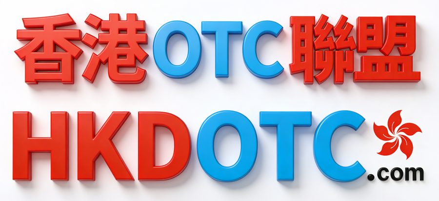

香港OTC聯盟 HKOTC Alliance
香港數字資產 Web3 安全聯盟 · Hong Kong Web3 Cybersecurity Alliance (HKW3CA)
HongKong OTC 聯盟 — Alliance of Hong Kong's leading OTC Virtual Asset Service Providers (VASP)。香港數字虛擬資產場外交易服務聯盟（Web3A.org · HKOTC.co · RWA1.net）。
香港OTC聯盟 HKOTC Alliance
香港OTC聯盟（HKOTC Alliance · HKDOTC.com）是由一群值得信賴的香港團隊組成，團員擁有卓越的比特幣 BTC、ETH、USDT、USDC 及加密貨幣知識。我們在香港交易比特幣已超過 6 年，在可靠性、經濟性、安全性和便利性方面的優勢引領行業。
HKDOTC.com, based in Hong Kong, is made up of a team of trusted traders with excellent bitcoin and cryptocurrency knowledge. We have been trading Bitcoin in Hong Kong for more than 10 years and lead the industry in terms of reliability, affordability, safety and convenience.
地址 Address：香港九龍尖沙咀漢口道5-15號漢口中心 Hankow Centre, 5-15 Hankow Road, Tsim Sha Tsui, Kowloon, Hong Kong
香港數字資產監管最新動態
財庫局局長許正宇發表《香港數字資產發展政策宣言2.0》
財庫局 FSTB 與證監會 SFC 就規管數字資產交易及託管服務的立法建議進行諮詢
2025/6/27 — 公眾諮詢至 2025/8/29
財經事務及庫務局（財庫局 FSTB）和證券及期貨事務監察委員會（證監會 SFC）就設立數字資產（虛擬資產）交易和託管服務提供者發牌制度的立法建議，展開聯合公眾諮詢。經調整的立法建議涵蓋數字資產交易服務提供者的發牌制度，以及數字資產託管服務提供者的發牌制度。在擬議的兩個發牌制度下，證監會 SFC 將擔當標準制訂者，負責制訂適用於持牌和註冊數字資產交易和託管服務提供者的規管要求，而香港金融管理局（金管局 HKMA）則會擔當前線監管機構，監管已註冊為可提供相關服務的銀行及儲值支付工具。
（一）數字資產交易服務提供者的發牌制度
- 任何人如在香港從事提供數字資產交易服務的業務，須獲證監會 SFC 發牌或註冊；
- 不論服務透過實體店及／或其他平台提供，涵蓋簡單交易服務（如數字資產之間或與法定貨幣之間的兌換）及較複雜服務（如經紀活動、大宗交易、顧問或資產管理）；
- 持牌人或註冊人須符合適當人選評定準則（Fit & Proper Test）及一系列規管要求：財政資源、知識和經驗、風險管理、財務匯報和披露、業務操守、資料及通知、備存記錄、妥善保障客戶資產和投資者保障措施等；
- 發牌制度將於相關法律條文生效當日全面實施，不設「被當作已獲發牌」的安排。
（二）數字資產託管服務提供者的發牌制度
- 任何人如在香港經營提供數字資產託管服務的業務，須獲證監會發牌或註冊。託管業務定義：以業務形式代客戶保管（i）數字資產；或（ii）能轉移客戶數字資產的工具（包括私人密鑰）；
- 與交易服務一樣，須符合適當人選評定準則及一系列規管要求；同樣在生效當日全面實施，不設「被當作已獲發牌」安排。
香港《穩定幣條例草案》Stablecoins Bill
《穩定幣條例草案》已於 2024 年 12 月 6 日刊登憲報，並於 2024 年 12 月 18 日提交立法會首讀，旨在引入針對與法定貨幣掛鈎的穩定幣（「指明穩定幣」）的發行及發售監管制度，並由香港金融管理局（HKMA）監督及執行。要點包括：
- 現有發行人應儘快申請穩定幣發行人牌照，以享有過渡性安排（包括不違反期及臨時牌照）；
- 穩定幣制度生效後，非持牌虛擬資產場外交易（VA OTC）服務提供者可能無法在香港提供指明穩定幣（至少在 VA OTC 發牌制度生效前）；
- 向香港公眾發售及積極推廣未獲 HKMA 發牌發行人的指明穩定幣（可能包括 USDT、USDC 及海外發行的廣泛流通穩定幣）可能將會被禁止。
香港政府就規管虛擬資產場外交易 OTC 的立法建議進行諮詢
香港加密貨幣 OTC 交易風險與法律保護
1.1 散戶與場外交易 OTC 的定義
散戶，通常指主要以少量自有資金進行虛擬貨幣交易的投資者。場外交易市場（Over-the-Counter）也叫櫃檯交易市場，是指不透過中央交易所、直接在交易所外進行的交易。交易所交易（場內交易）基於對交易所的信任進行交易；場外交易則以彼此間信賴為基礎。因為 OTC 交易的內在優勢，有時大宗交易的機構投資者或高淨值人士也會選擇場外交易。
2024年2月8日，香港政府發布《有關規管虛擬資產場外交易的立法建議》公眾諮詢文件，建議將「虛擬資產場外交易」定義為：以業務形式提供虛擬資產現貨交易服務，無論透過實體店（包括自動櫃員機 ATM）或其他形式（如網路平台），並明確排除已取得 VASP 牌照的交易平台。
鑑於「虛擬資產場外交易業務」僅包括以業務形式提供的服務（Business Services），個人與個人（P2P）或其他實體之間並非以業務目的進行的虛擬資產買賣不受牌照要求限制。但這並不表示散戶透過 OTC 交易虛擬貨幣不存在其他風險。
1.2 香港虛擬貨幣 OTC 交易的主要形式
線上：在沒有中介參與的情況下，用戶之間直接買賣加密貨幣。一般由平台充當撮合媒介，但資金與虛擬貨幣的流轉並非透過平台，而是以其他支付管道進行。典型例子是 OTC DEX。
線下：根據人脈網絡等管道面對面溝通完成交易，例如香港街頭的虛擬貨幣兌換店鋪、ATM 兌換機等。
根據香港執法機關初步實地觀察的粗略估計，全港約有 200 間實體虛擬資產場外交易店（包括 ATM 操作的場外交易店）正在運作，以及約有 250 個網絡上活躍的虛擬資產買賣服務商。
虛擬貨幣 OTC 交易具有交易彈性、減少價格滑點、參與門檻較低等優勢，對剛入門的散戶相對友善。
2.1 虛擬貨幣 OTC 交易風險概述
- 違法犯罪風險：散戶在 OTC 交易中，尤其跨國交易中，容易因違反各司法轄區民事、行政、刑事、稅務等規定而承擔法律責任。
- 資料外洩風險：OTC 商家未保護好散戶個人資料或遭遇駭客攻擊，導致個人隱私資訊外洩。
- 交易損失風險：因 OTC 商家不合規、市場波動、價格操控或交易對手違約等原因，導致財產損失。
由於大陸的加密貨幣監管較為嚴格，香港 OTC 交易為大陸投資者提供了重要交易管道。
2.2 違法犯罪風險
- 散戶涉嫌洗錢或開設賭場等相關犯罪，收到違法所得資金而導致帳戶被凍結。OTC 交易仰賴雙方彼此信任，部分交易對手會利用資訊不對稱、針對缺乏經驗的散戶設下圈套，誘惑其接受可能更優惠的價格，進而把散戶變成轉移贓物的工具。此外，有些不良 OTC 商家本身就涉及犯罪活動，或被犯罪集團利用進行洗錢。香港的反洗錢（AML）、反恐融資（CTF）規定也要求在香港進行 OTC 的散戶提高警惕。
- 因違反外匯管理規定買賣外匯而承擔法律責任。根據《中華人民共和國外匯管理條例》，私自買賣外匯、變相買賣外匯、倒買倒賣外匯，或非法介紹買賣外匯數額較大的，由外匯管理機關給予警告，沒收違法所得並處罰款；構成犯罪的依法追究刑事責任。若以虛擬貨幣為媒介，透過「外匯—虛擬貨幣—人民幣」的兌換實現價值轉換，屬於變相買賣外匯，往往會以非法經營罪追究刑事責任。
- 因違反香港稅法而遭遇罰款或監禁。根據香港稅務局《解釋及執行指引第39號》（DIPN39）第47條，「加密貨幣業務」包括：加密貨幣交易（trading）、兌換（exchange）、挖礦（mining）。在香港進行的加密貨幣業務活動所產生的香港來源利潤須繳納利得稅。香港採用屬地來源稅制，實施兩級利得稅稅率：未合併業務首 HK$200 萬應評稅利潤稅率 7.5%，超過部分 15%。未按時繳納稅款可能導致：固定罰款 HK$10,000、罰款最高可達少繳稅款三倍，嚴重情況下可被判處最高三年監禁。經常性、大額交易的投資者需格外注意稅務要求。
2.3 資料外洩風險
- 技術複雜性增加安全保障難度。大規模 OTC 交易需處理大量資金和數位資產轉移，可能出現區塊鏈網路問題、錢包安全性、交易確認延遲以及基礎設施可靠性問題；行政問題涉及身份驗證、條款談判、法律文件執行和交易記錄管理。
- 第三方平台安全漏洞。提供 OTC 交易便利的第三方平台容易受到安全漏洞和資訊外洩影響，可能導致交易者身份、交易細節等敏感資料遭未授權存取。網路釣魚攻擊和惡意軟體等威脅可能危及平台完整性和使用者資產安全。
- 知名交易所也曾面臨外洩風險。即便是火幣 Huobi 這樣的知名交易所，2021 年也曾被白帽揭露資訊外洩風險，涉及大範圍 OTC 交易資訊、大戶資訊、客戶資訊、內部技術架構等。部分犯罪集團會利用 OTC 平台竊取用戶訊息，部分無良 OTC 平台甚至向外倒賣用戶訊息。
2.4 交易損失風險
- 信任風險。相較於中心化交易所，OTC 交易對交易雙方的信任程度要求更高。任何一方違約、延遲履約或不完全履約，加上資訊不對稱、溝通障礙，都可能加劇信任風險，導致交易破裂乃至信任崩塌。
- 詐欺行為。特別是涉及大額資金或跨國交易。常見騙局包括虛構身份、誇大交付虛擬資產的能力、欺詐性退款（收到數位資產後撤銷支付）等。
- 撮合方詐欺或破產。在 OTC 交易中，撮合方的任何失敗都可能產生連鎖反應，對所有交易參與者的財產造成損害。
- 跨境交易風險。尤其是大陸、香港之間的跨境交易，法律體系、監管框架和執法能力的差異增加交易複雜性；管轄權問題可能導致違約或詐欺時難以尋求法律救濟。
3. 散戶如何保護自己並實現合規交易？
3.1 因應違法犯罪風險
- 增強合規意識：時刻關注最新法規動態，特別是 AML、CTF 和稅務合規要求。
- 避免參與可疑交易：不購買來源不明的虛擬貨幣，避免成為非法資金流轉鏈；記錄所有交易明細，以便證明資金合法來源。
- 尋求專業支援：尋找熟悉虛擬貨幣交易和相關法律的專業律師，提供許可證申請、合規協議草擬和糾紛解決支援。
3.2 因應資料外洩風險
- 盡職調查：核實交易對方身份，評估其財務穩定性，審查交易歷史。KYC 程序和背景調查可提供有效資訊。
- 謹慎提交個人資訊：僅在必須情況下提供個人識別資訊（如 KYC），避免將敏感資訊透露給第三方。
- 注意網路安全：僅透過受信任裝置存取交易帳戶，避免使用公共 Wi-Fi，設定複雜密碼並定期變更。
3.3 因應交易損失風險
- 安全儲存資金：多重簽名錢包（Multisig）和冷儲存（Cold storage）對保護大量持倉至關重要。
- 使用第三方託管服務（Trust Custody）：由可靠的第三方託管服務充當中間人，在雙方履行義務之前持有資金或資產，特別適用於大宗交易。
- 明確約定合約內容：指定交貨時間表、支付方式和爭議解決機制等條款，減少模糊性。
HK OTC 結論：香港虛擬貨幣市場為散戶投資者提供了豐富的機遇，但也伴隨著複雜的風險與挑戰。從違法犯罪、資料外洩到交易損失，每種風險都可能對投資人構成威脅。散戶在進入市場前必須做好充分準備：合規操作、加強安全意識和理性投資是關鍵；了解各地法律法規、尋求專業顧問支持，才能在複雜的市場環境中有效維護自身權益，實現長期成長、安心衝浪。
USDT 穩定幣市場動態
穩定幣市場的領頭羊 USDT 市值已突破 $1,070 億美元，發行商 Tether 去年第四季實現 $28.5 億美元淨利潤，創歷史新高，並累積超額準備金達 $54 億美元。Tether 2023 年實現 $62 億美元淨利潤，相當於高盛的 78%、摩根士丹利的 72%，但員工數量僅約 100 人（高盛 49,000 人、摩根士丹利 82,000 人）——Tether 每位員工創造淨利潤約 $6,200 萬美元。USDT 規模年初至今成長超 60%（由 $662.5 億增至突破 $1,070 億美元）。流通以波場鏈 Tron 為主（逾 50%），其次是以太坊 ETH（40.46%）、BSC（3.44%）和 Arbitrum（2%）。
HKDOTC.com 專業 OTC 服務
為香港人提供的最方便及快捷購買數字虛擬資產 BTC / USDT 的方法。一個信息就可以完成交易，交易時間平均只需 10 分鐘。即時 WhatsApp 交易，價格實時更新，沒有隱藏費用。
🔒 安全 SAFE
與交易所不同，我們不會保存你的加密貨幣。您的資金不會受到被攻擊風險。Unlike other digital asset and bitcoin exchanges, we don't keep your assets.
💳 靈活支付 FLEXIBLE
支持多間本地銀行轉賬、FPS、Alipay HK 交易。FPS, Alipay HK and local banks transfer available.
⚡ 快速交易 FAST SETTLEMENT
交易 10 分鐘內完成，交易過程方便快捷。Most OTC trades settled within 15 mins, trading process is simple and easy.
幣種報價 Quotation（HK$ 7.8 · Updated Daily）
1. 價格僅供參考，交易前請與客服確認（WhatsApp +852-96981019）。Price is for reference only, please confirm with CS before trading.
2. 有些加密貨幣可能需要數個小時才能轉款成功，請耐心等候。Cryptocurrencies may take up to a few hours to confirm.
Fees 手續費：所有交易額在 HKD$5,000 以下，收取 HKD$100 手續費。
三步完成交易
留言 MESSAGE US
在 WhatsApp 內傳訊息給 HKDOTC.com 交易員，告訴交易員你想交易什麼，交易員會給你報價。第一次買家請帶同身份證及地址證明到我們尖沙咀辦事處辦理開戶手續。
轉帳 TRANSFER
請在 10 分鐘內付款到交易員的賬戶內。Transfer payment to the account provided by the trader within 10 mins.
完成 COMPLETE
當交易員確認您的轉賬後，會把加密貨幣轉到您提供的地址上。When the trader has confirmed your transaction, they will transfer the cryptocurrency to the address you provided.
實體門市 CryptoPanda.cc 尖沙咀總店
九龍尖沙咀彌敦道 54 號美麗都大廈 59-60 號舖（地鐵 TST MTR D2 出口 / 招商永隆銀行正對面 / K11 商場旁）
高德地圖 ↗ · Google 地圖 ↗ · 百度地圖 ↗
HKOTC 聯盟成員 Alliance Members
香港證監會 SFC 持牌虛擬資產交易平台名單
| 中央編號 | 公司名稱 | 平台 | 發牌日期 |
|---|---|---|---|
| BPJ213 | OSL Digital Securities Limited OSL數字證券有限公司 | OSL Exchange | 15/12/2020 |
| BPL992 | Hash Blockchain Limited | HashKey Exchange | 09/11/2022 |
| BPW549 | Hong Kong Virtual Asset Exchange Limited 香港虛擬資產交易所有限公司 | HKVAX | 03/10/2024 |
| BPO721 | Hong Kong Digital Asset EX Limited 香港數字資產交易集團有限公司 | HKbitEX | 18/12/2024 |
| BUA970 | Accumulus GBA Technology (Hongkong) Co., Limited 雲賬戶大灣區科技(香港)有限公司 | Accumulus | 18/12/2024 |
| BUN619 | DFX Labs Company Limited | DFX Labs | 18/12/2024 |
| BUT670 | EXIO Limited | EX.IO | 18/12/2024 |
| BUY578 | Panthertrade (Hong Kong) Limited 猎豹交易（香港）有限公司 | PantherTrade | 27/01/2025 |
| BUT913 | YAX (Hong Kong) Limited | YAX | 27/01/2025 |
| BUQ956 | Bullish HK Markets Limited | Bullish | 18/02/2025 |
| BSI739 | Hong Kong BGE Limited | BGE | 17/06/2025 |
關於 ASEAN AI Blockchain Alliance（AABA.asia · AseanBlock.org）
AABA 由聯合創始人 Albert Cheok（馬來西亞）、Timmy Tan（菲律賓）、Sing Wang、TonyTong.cc、Thomas Cheung（香港）、Josephine（越南）創立，是東南亞國家 AI、Blockchain 和 Web3 社群的領先行業協會，致力賦能會員利用 AI、Blockchain 和 Web3 技術實現業務增長與轉型。成員包括香港區塊鏈協會（HKBA.club）、粵港澳大湾区人工智能研究院 BAI、香港理工大學（PolyU）、香港科技大學（HKUST）、香港都會大學（HKMU）、香港金融管理學院（HKFSI）及位於美國矽谷的 International Technical University（ITU.edu）等，為東盟國家提供 Blockchain、AI 和 Web3 教育。
www.AABA.asia · www.AseanBlock.org · Facebook.com/AseanBlock · Email: AseanBlock@gmail.com
嚴正聲明 📢 拒絕違規
HKDOTC 不參與任何虛擬貨幣交易平台推廣或代幣項目推介；不提供任何形式之投資建議、交易策略或收益承諾！HKDOTC 專注於專業場外交易 OTC 服務，堅決杜絕所有與傳銷（CX）、返利收益等有關可疑活動 ❌。
HKDOTC 所有交易均嚴格依據香港現行法例及監管框架操作，包括但不限於《海關條例》與《打擊洗錢條例》，全面執行 KYC / AML 程序，確保資金來源真實、用途合法。對於任何涉及不明資金、可疑鏈上交易結構或違規合作邀約，HKDOTC 將一律拒絕，並保留依法通報執法機關之權利 🛑。
HKDOTC 深信：制度比承諾更可靠，合規是交易存在的前提，報價不是參考，而是對信任的兌現。歡迎客戶查閱 香港證監會 SFC.HK 或其他監管機構之官方資料以作了解。
KYC
Know Your Customer 認識你的客戶 — 客戶識別流程 CIP（收集姓名、出生日期、地址、身份文件並核實）、客戶盡職調查 CDD、持續動態監測。個人文件：護照／駕照／住址證明／稅務資訊等；企業文件：營業執照、公司註冊資訊、股東資訊等。
CDD
Customer Due Diligence 客戶盡職審查 — 了解帳戶用途、開戶原因、財富或收入狀況、預期交易金額與數量、開戶資金來源及使用的金融服務類型。
AML
Anti-Money Laundering 打擊洗錢 — 嚴格執行香港《打擊洗錢條例》規定，監察可疑交易並依法通報。Trust Custody TCSP License Service Provider（DenaTrust.com）。
提防虛擬貨幣騙局 · 香港 Web3 網絡安全聯盟
如你曾在任何加密貨幣項目中懷疑被騙，或發現可疑項目，除了到警署報案，也請在我們的報告中心提供資料，令社群內其他人降低被騙風險，共同建構行業聲譽。HK Web3 CyberSecurity Alliance HKW3CSA · Web3A.org
HKOTC 2021 新聞稿：HKD OTC.com 進軍美國 OTC 場外交易市場
2021/9/21 PR
Net Savings Link, Inc. (USA OTC: NSAV), a cryptocurrency, blockchain and digital asset technology company, announced the acquisition of a 40% stake in Hong Kong Premium OTC Crypto Trading Desk HKDOTC.com / HKOTC — one of Hong Kong's most popular OTC crypto trading services, with 16 strategic crypto and blockchain partners, including Binance, Huobi, Bybit, LBank, CoinW and BW.com. HKDOTC.com offers fast settlement, flexible payment methods and secure trading, as unlike other digital asset and bitcoin exchanges, it doesn't hold client's assets. This team of traders has been trading Bitcoin BTC, Ethereum ETH, Tether USDT, USDC, Bitcoin Cash BCH in Hong Kong for more than 6 years and leads the industry in terms of reliability, affordability, safety and convenience.
聯繫我們 Contact Us
📞 報價 Quotation
WhatsApp / Tel：+852-96981019
Telegram：@Com2049
🌐 聯盟網址
www.HKDOTC.com · HKOTC.co
Web3A.org · RWA1.net